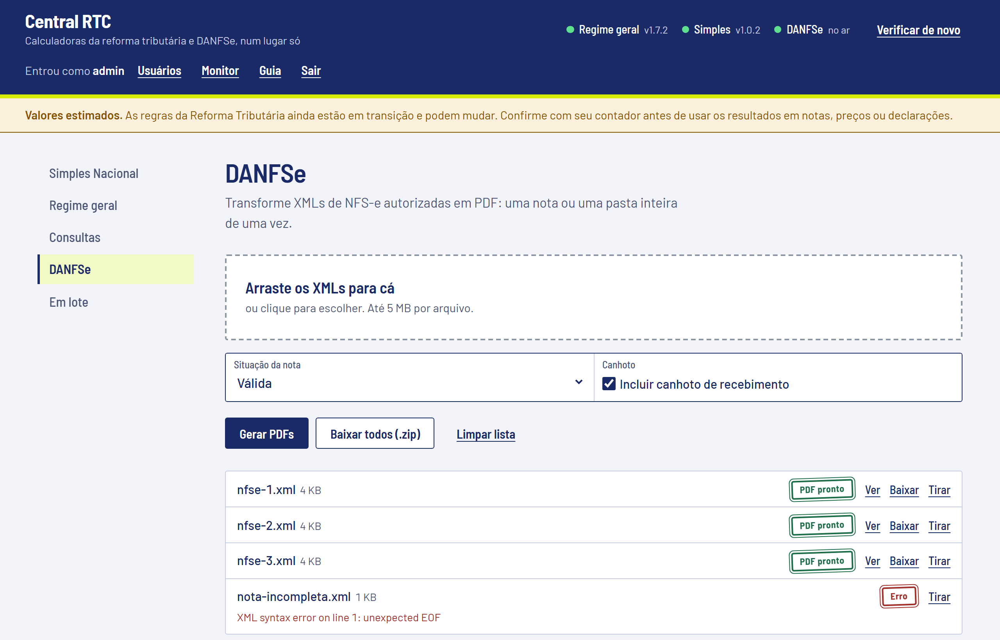
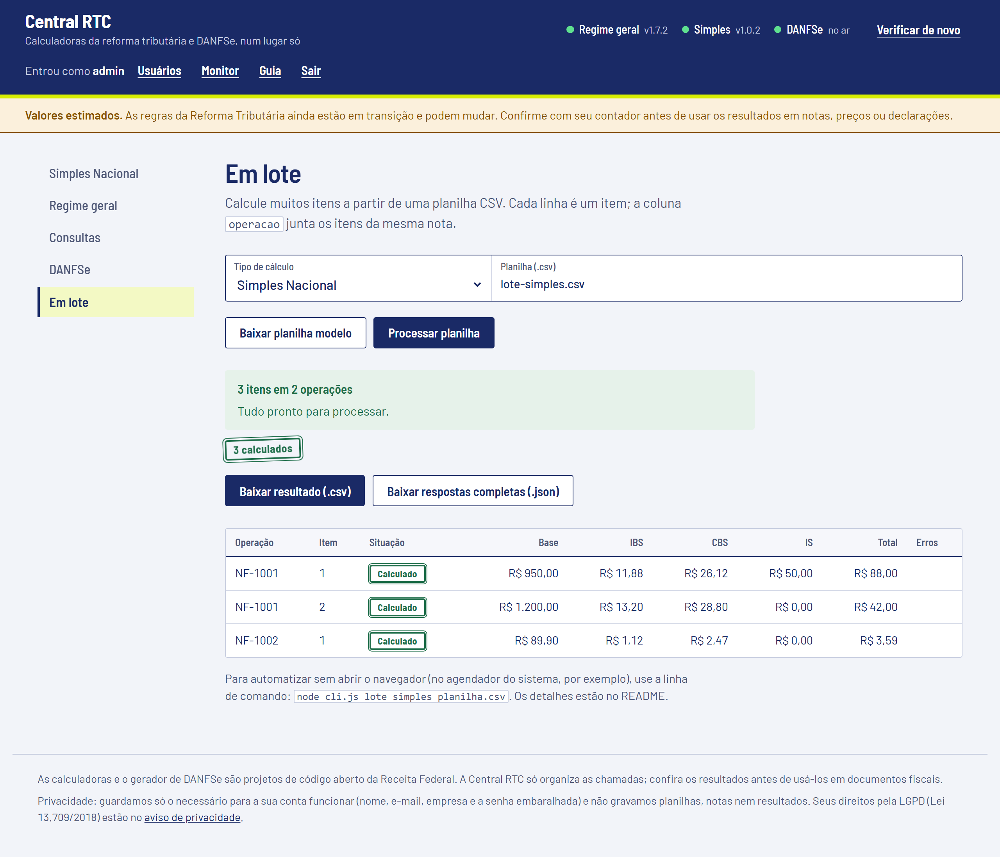

Contadores e escritórios
Simule a tributação nova dos clientes, confira notas e processe a carteira inteira por planilha.
A Central RTC junta as calculadoras de CBS, IBS e Imposto Seletivo da Receita Federal e o gerador de DANFSe num painel só. Funciona no navegador, do computador ou do celular, para um item ou para uma planilha inteira.


Para a transição da reforma, a Receita Federal publicou as calculadoras como programas de código aberto. Elas são a referência dos cálculos, mas chegam como serviços para sistemas conversarem entre si, não como telas.
Simule a tributação nova dos clientes, confira notas e processe a carteira inteira por planilha.
Veja quanto de CBS e IBS cada produto ou serviço vai ter, e gere o DANFSe das NFS-e já emitidas.
Teste regras e códigos antes de mexer no sistema e automatize lotes pela linha de comando.
Nunca mexeu com tributos? O guia de uso explica cada tela e cada termo em linguagem simples, e também está em PDF para imprimir ou compartilhar.
Cada parte conversa com um serviço oficial. A Central RTC monta os pedidos, chama a calculadora certa e organiza a resposta. Nenhum valor é recalculado por fora.
Conforme a NT 2026.005, com o estado de cada item e os códigos de erro explicados.
As 15 atividades vigentes, marcadas como disponíveis ou não para os anexos e o documento da empresa.
Reduções, alíquotas efetivas e Imposto Seletivo. Depois, o XML do grupo de tributação validado no XSD.
cClassTrib, NCM, NBS, alíquotas de referência e descrição dos códigos de erro.
Arraste as NFS-e autorizadas, escolha a situação e baixe tudo num .zip.
Centenas de itens por CSV, com o resultado pronto para o Excel e as respostas completas em JSON.
As capturas foram feitas com o simulador de desenvolvimento do projeto, então os valores são fictícios.
Cada item mostra base, CBS, IBS estadual e municipal, com a redução aplicada e a alíquota efetiva. A memória de cálculo fica a um clique.
A partir de 2027 as alíquotas nominais passam a ser obrigatórias, e o painel mostra ou esconde esses campos conforme a data.

Marque os anexos que a empresa usa e o documento da nota. A tabela aponta o que está disponível e explica por que o resto não está.

Os XMLs com problema são marcados com o motivo, sem travar os outros. Os PDFs prontos podem ser vistos, baixados um a um ou juntos.

Antes de processar, o painel aponta linhas com colunas faltando ou dados diferentes dentro da mesma nota. No fim, cada item volta com a linha de origem.

A CBS e o IBS substituem aos poucos PIS, Cofins, IPI, ICMS e ISS. Cada fase muda o que aparece na nota e quanto se paga.
Ano de teste: CBS de 0,9% e IBS de 0,1% destacados na nota.
A CBS substitui PIS e Cofins, e o Imposto Seletivo começa.
ICMS e ISS caem a cada ano, enquanto o IBS sobe.
Ficam só IBS, CBS e Imposto Seletivo.
Alíquotas e regras ainda podem mudar por regulamentação. A Central RTC usa a versão em vigor dos serviços da Receita.
O painel calcula e devolve. Planilhas, XMLs e resultados não são gravados. A única coisa salva é a sua conta.
Todo o acesso online passa por HTTPS.
A senha é guardada só como hash scrypt. Nem o administrador consegue lê-la.
Cada conta nova passa por uma checagem automática antes de ser liberada.
Depois de 10 senhas erradas, o endereço fica bloqueado por 15 minutos.
Tudo o que roda está no GitHub, sob licença MIT, para qualquer um conferir.
Testes automáticos cobrem login, cadastro, bloqueio e cálculos antes de cada atualização.
Abra central-rtc.taild4c7a5.ts.net e toque em Criar conta.
Informe nome, e-mail e uma senha.
Em 1 a 2 minutos, entre e use.
Roda num servidor do próprio projeto e pode ficar fora do ar de vez em quando.
Com o Docker instalado, a ferramenta inteira sobe no seu computador e fica em localhost:3000.
git clone https://github.com/PedrosHttps/central-rtc.git cd central-rtc docker compose up -d --build
A primeira vez leva alguns minutos: o Docker baixa e compila o código oficial da Receita.
O mesmo motor do painel roda pela linha de comando, para agendar no cron ou no Agendador de Tarefas.
# planilha de itens vira planilha de resultados node cli.js lote simples notas.csv # pasta de NFS-e vira pasta de PDFs node cli.js danfse ./xmls -o ./pdfs
Código de saída 0 quando tudo deu certo, 1 quando um serviço está fora e 2 quando algum item falhou.
O painel e a linha de comando falam com três serviços independentes, cada um compilado a partir do repositório oficial da Receita Federal.
É um projeto independente que usa os serviços de código aberto publicados por ela.
As regras da reforma ainda mudam. Confirme com seu contador antes de usar os resultados em notas, preços ou declarações.
O DANFSe é o documento auxiliar de uma NFS-e já emitida. Use os XMLs que o emissor devolveu.
Crie a conta, espere a liberação e faça o primeiro cálculo.